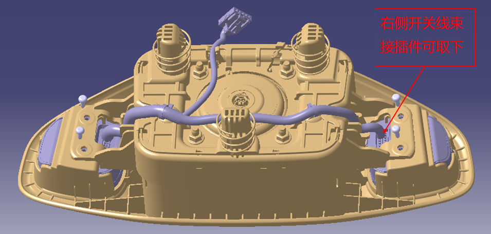
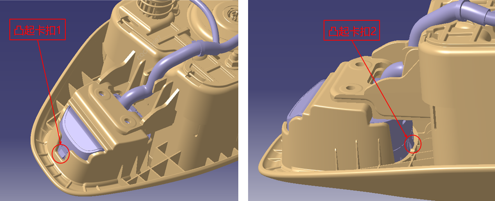
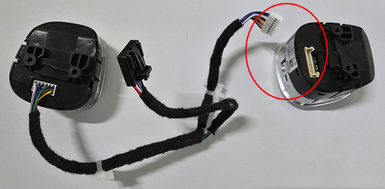
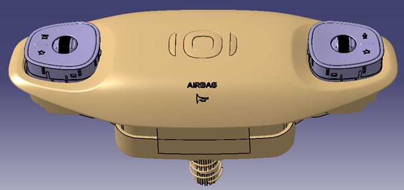
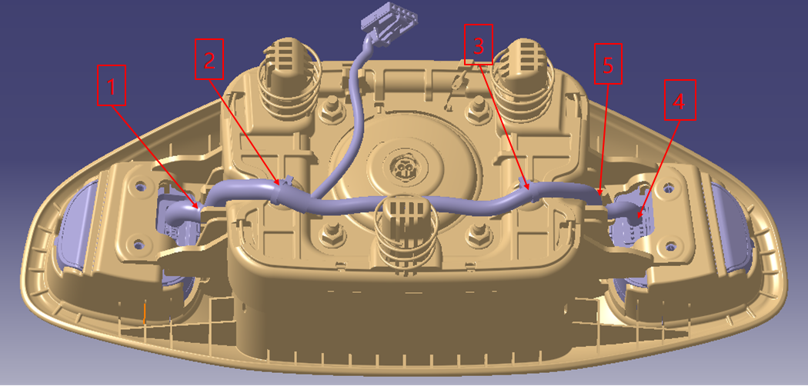
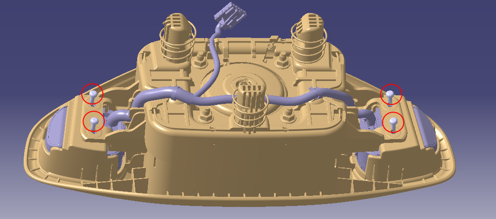

Снятие и установка переключателя на рулевом колесе
Снятие
-
Перевести автомобиль в неподвижное состояние с выключенным питанием.
-
См. метод Снятие в разделе "Системы пассивной безопасности > Снятие и установка > Подушка безопасности водителя" Подушка безопасности водителя, снять подушку безопасности водителя и отсоединить разъемы звукового сигнала, многофункциональных кнопок, подушки безопасности и т. д.
-
Перед ремонтными работами закройте разъем подушки безопасности водителя электростатической пленкой и снимите ее перед установкой разъема после завершения ремонта.
-
С помощью крестовой отвертки выкрутить 4 винта крепления переключателя и надежно сохранить их. При ремонте можно подложить защитную фланелевую ткань во избежание появления царапин и потертостей на внешней поверхности деталей.

-
Удерживая фиксатор разъема жгута проводов правого переключателя (со стороны кнопки голосового управления), с усилием потянуть наружу и отсоединить разъем. (Электрический разъем жгута проводов правого переключателя можно отсоединить, левый жгут проводов не подлежит демонтажу)

-
С помощью плоской отвертки или съемника клипс извлечь фиксатор жгута проводов из монтажного отверстия подушки безопасности.
Предупреждение
После демонтажа фиксатора жгута проводов необходимо проверить целостность фиксатора жгута переключателя; в случае обнаружения неполноты фиксатора или его облома в монтажном отверстии подушки безопасности необходимо заменить как подушку безопасности водителя, так и переключатель новыми деталями -
С помощью лопатки или плоской отвертки сначала вывести из зацепления с пластиковой рамкой подушки безопасности выступающий фиксатор 1 переключателя, а затем выступающий фиксатор 2 переключателя; когда выступающие фиксаторы выйдут из пластиковой рамки, с усилием вытолкнуть переключатель наружу.
Аналогичным образом демонтировать переключатель с другой стороны.

Предупреждение
Установка
-
Удерживая фиксатор разъема жгута проводов правого переключателя (со стороны кнопки голосового управления), с усилием потянуть наружу и отсоединить разъем. (Электрический разъем жгута проводов правого переключателя можно отсоединить, левый жгут проводов не подлежит демонтажу)

-
Сначала установить правый переключатель (со стороны кнопки голосового управления) в правое монтажное отверстие подушки безопасности водителя до щелчка. Затем установить левый переключатель (со стороны кнопки режима вождения) и жгут проводов в левое монтажное отверстие подушки безопасности до щелчка.

-
Слева направо: последовательно защелкнуть жгут проводов в пластиковые фиксаторы подушки безопасности, вставить фиксатор жгута проводов в монтажное отверстие подушки, затем подсоединить разъем к правому переключателю и в завершение защелкнуть правый жгут проводов в пластиковый фиксатор. Проверить и убедиться, что разъемы переключателей зафиксированы правильно и надежно.

-
С помощью крестовой отвертки закрепить переключатель на рулевом колесе на подушке безопасности водителя с помощью 4 винтов, момент затяжки винтов: 0.65 ± 0.1 N.m.
После завершения установки нанести красную метку на 4 винта с помощью цветного маркера, сделать фотоснимки и загрузить изображения в систему гарантийных претензий по ремонту.

Предупреждение
Все 4 винта должны быть установлены обязательно; в случае утери какого-либо винта эксплуатация на автомобиле запрещена -
См. метод Установка в разделе "Системы пассивной безопасности > Снятие и установка > Подушка безопасности водителя" Подушка безопасности водителя, подсоединить разъем подушки безопасности водителя, многофункциональные кнопки, разъемы звукового сигнала. Аккуратно управить жгут проводов внутрь во избежание его защемления, затем сориентировать три крепежных штифта подушки безопасности водителя по трем монтажным отверстиям на рулевом колесе и с усилием нажать.
-
Покачать подушку безопасности водителя для проверки правильности установки, проверить работу звукового сигнала, работоспособность всех функциональных кнопок переключателей, а также проверить равномерность зазоров по периметру.